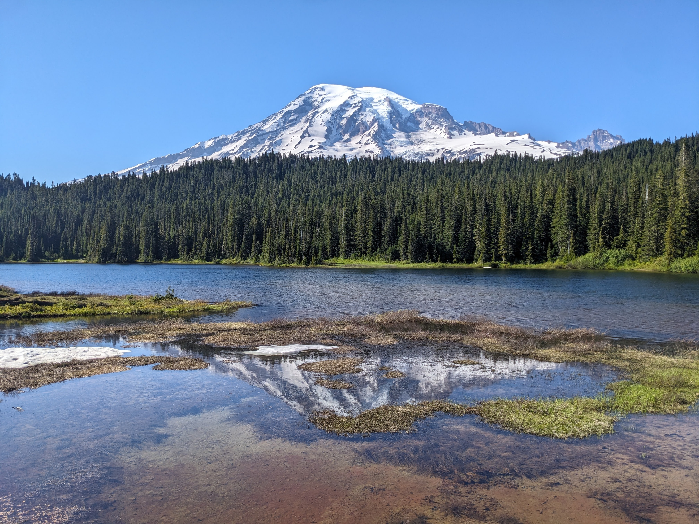
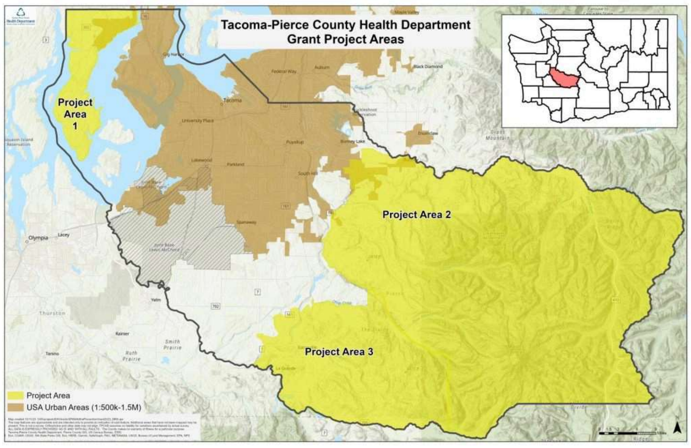

Designing for Safety: Redesigning Pierce Conservation District's Wildfire Preparedness Hub
Winter 2025 | TGID 320 – University of Washington Tacoma
Project Type:
Role:
Skills:
Project Overview
In the heart of Pierce County, surrounded by evergreens and mountain views, a growing threat lingers every summer—wildfires. As these disasters grow more frequent, the Pierce Conservation District (PCD) needed a stronger way to help residents prepare.
Mt. Rainier National Park, Reflection Lake (Photo by Jennifer Huynh)
The Problem
PCD’s existing wildfire preparedness webpage was outdated in both design and content, offering limited information and lacking clear, actionable resources for residents. Critical information—such as information about services, wildfire preparedness events, and other resources for individual action—was either missing or not apparent, reducing the site’s effectiveness in helping the community prepare for wildfire threats.

Original PCD Wildfire Preparedness Webpage
The Goal
Redesign the webpage to be accessible, user-friendly, and tailored to the rural communities most at risk.
Map of the project areas. Project Area 1: Key Peninsula, Project Area 2: White River/Bonney Lake/Buckley areas, Project Area 3: Eatonville/Ashford/Elbe
My Role
As part of a community-focused UX design course at the University of Washington Tacoma, I took on this project solo, from research through iteration. I collaborated with PCD staff and community partners to ensure the final design would genuinely serve the people most affected by wildfire threats. My responsibilities included:
- Partnered with PCD staff to define the problem
- Conducted research
- Built and tested prototypes within the CMS
- Ran usability tests
- Iterated based on feedback
- Presented the final design
Process – Research & Discovery
The research started with a question: How do rural homeowners in Pierce County find and use wildfire preparedness resources? In the research process, I:
- Conducted secondary research on demographics and wildfire impacts. The U.S. Census was used to discover the age range and primary language spoken in Pierce County, and the focus areas of the wildfire preparedness resources. Information was gathered from the Washington State Department of Natural Resources on the impacts of wildfires in Washington State.
- Interviewed PCD staff to identify content needs. Two PCD staff members were interviewed,
- One being the Wildfire Prevention Program Manager, identifying the needs of the redesign. These needs included the inclusion of key services, videos, and other resources.
- Another is the Executive Director of PCD, identifying the need for resources in other languages, specifically for the growing Slavic community.
- Conducted a comparative analysis of other county/state wildfire websites. This produced the ideas of including resources on:
- Information about individual action
- Infographics for more visual learners
- Videos on preparing for wildfires
- Learned more about web accessibility from the U.S. Department of Justice. This research highlighted several important factors to consider, including:
- Sufficient color contrast
- Alternative text for images
- Captions for videos
- Support for keyboard navigation
- Primary user research. Due to the limited time frame of this course and other factors, no primary user research was conducted. This is not a “typical” route to go, but with the constraints of this project. The prototype was built using secondary research.
Process – Sketching & Ideation
The website uses a restrictive content management system (CMS) where the type of content you can include (text, video, images, etc.) is in widget form, and you drag these widgets into the page to create the page. Due to this form of CMS, there is a constraint on what and how content can be created. Another constraint is that this redesign is of a specific webpage within a larger website, with this, it means that the redesign also has to follow a similar structure and layout of the website in its entirety. I sketched the redesign within real-world constraints, preserving the existing structure while improving clarity and flow.

First Iteration Sketch
Process – Prototyping
Rather than designing in Figma, I built the high-fidelity prototype directly within the website’s CMS, ensuring it could be realistically implemented. This approach made it easier to test what was possible within the constraints of the actual platform. The CMS allows the creation of drafts of the webpage that are not live. I created a draft to begin my prototyping, which mitigates the risks of redesigning live.

Second Iteration - High-Fidelity Prototype
Breaking down the high fidelity prototype:
- Explanation of resource (screenshot)
- Visual guides (screenshot)
- Action items (screenshot)
- Calendar events (screenshot)
- Additional resources (screenshot)
- Contact information (screenshot)
Process – Usability Testing
Testing was conducted using a survey-based format due to limitations in reaching rural users. Similar to how a typical usability test would go, the survey included three main sections:
- Demographics: Ensuring each participant matched the target audience criteria.
- Where in Pierce County do you live?
- Are you a homeowner?
- Tasks: Participants were asked to complete six tasks to locate specific information and rate the task’s difficulty.
- Locate the section...
- In which section of the webpage did you find this information?
- How easy or difficult was it to find this section? 1 = very easy, 5 = very difficult
- Reflection: Evaluating clarity, missing information, and layout.
- What was your understanding of the purpose of the webpage?
- Was any part of the webpage's text or explanations unclear or confusing?
- Was there any additional information you felt was missing from the webpage?
- Was there any functionality or layout feature you felt was missing or could be improved on the webpage?
Participants included:
- Residents of the focus area: Pierce County Fire District #23, East Pierce Fire & Rescue, Key Peninsula Fire Department, & Mt. Rainier Lions Club were contacted.
- The Pierce County Fire District #23 fire department consists of many local volunteers. These volunteers themselves live within Ashford and Elbe.
- The East Pierce Fire & Rescue and Key Peninsula Fire Department hold a stake as members of the community and can provide insight into what is important in terms of fire safety.
- The Mt. Rainier Lions Club is a network of community members who get together to tackle challenges in the community.
- General Pierce County residents: Additional residents participated to supplement findings. These participants lived outside the target areas.
- Large Language Models: Due to limited participant availability, AI models (ChatGPT, Gemini, Claude, Copilot) were used to simulate feedback from a middle-aged homeowner in Eatonville. The Large Language Models were asked to answer the same survey questions as if they were middle-aged homeowners in Eatonville.
Key Feedback:
- The overall usability was rated positively, most tasks were rated towards “easy”, with a few towards “difficult”, mostly due to confusion about the tasks.
- Improved navigation – A navigation bar would help users identify what is on the webpage at a glance.
- “A search bar would allow users to quickly find specific information.”
- “... ensuring that key sections are easily accessible without too much scrolling”
- Clearer action items – Participants wanted structured instructions on preparedness programs.
- “Use clear and prominent call-to-action buttons...”
- “Adding a quick ‘Get Started’ button…”
- Real-time wildfire updates – Users requested current wildfire status, seasonal risk updates, and burn ban information.
- “Real-time or frequently updated information on current fire danger levels in Pierce County would be extremely valuable.”
Iteration & Improvements
The next iteration should include:
- Actionable Steps: Breaking down programs like “Wildfire Ready Neighbors” into digestible steps
- Navigation Bar: Added for improved scannability
- Live Info Integration: Pulled inspiration from fire district pages to include current wildfire risk updates
- Simplified Events Table: Used as a workaround for calendar limitations
Future Steps
The project is continuing with several key opportunities for improvement:
- In-Person Testing: To observe real-time behavior and identify pain points
- Accessibility: Implement ADA compliance—color contrast, alt text, keyboard nav, etc.
- Multilingual Support: Begin Slavic-language translations in partnership with local communities
- Card Sorting Exercises: To better understand user content prioritization
Post Course
Due to the limited time of the course, further iterations were completed voluntarily outside of the course. Some of the user insights were integrated into the webpage, including:
- Improved clarity in service explanations (will provide a specific screenshot in the portfolio)
- Clear action items (will provide a specific screenshot in the portfolio)
- Simplified calendar events (will provide a specific screenshot in the portfolio)
Second Iteration - High-Fidelity Prototype
Reflection
Due to course constraints, limited access to target users, and restrictions within the CMS, the design process deviated from traditional methods. Challenges included the inability to conduct user research before prototyping, the unconventional use of large language models in usability testing, reliance on survey-based feedback, and the inability to implement certain features suggested by users. These limitations were not overlooked. User research and robust usability testing with real participants are essential to centering design around user needs. Despite these constraints, the final design was created thoughtfully, with care and intention, using the best possible approaches available under the circumstances.
While the process had its challenges, the deeper purpose of this project provided constant motivation. This project wasn’t just about creating an interface—it was about supporting wildfire preparedness and protecting the people and environments I care about. By merging my passion for UX with my connection to nature and community resilience, I aimed to design a tool grounded in empathy, accessibility, and real-world relevance. This personal investment helped ensure that, even with limitations, the design stayed rooted in values that matter: clarity, equity, and impact.